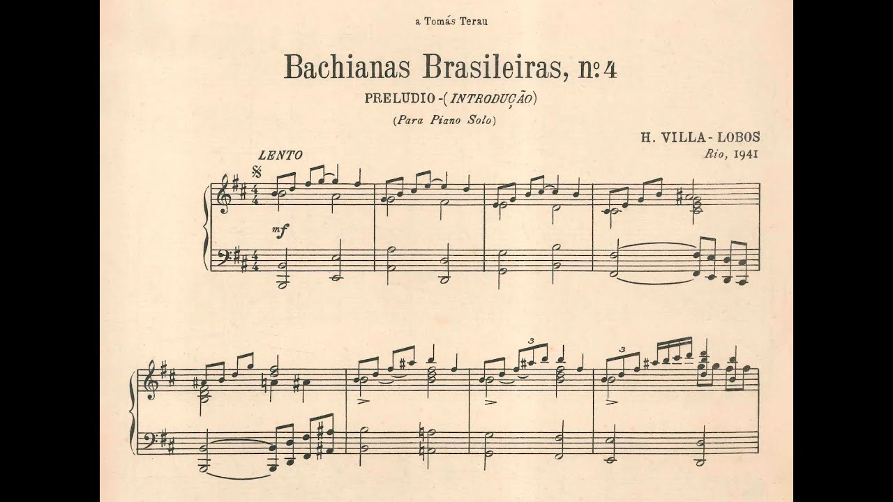
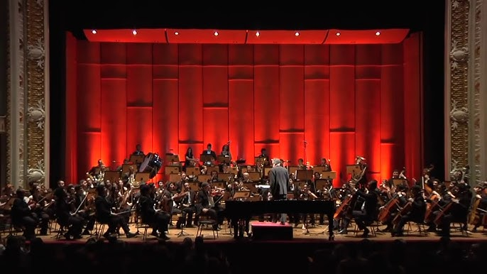
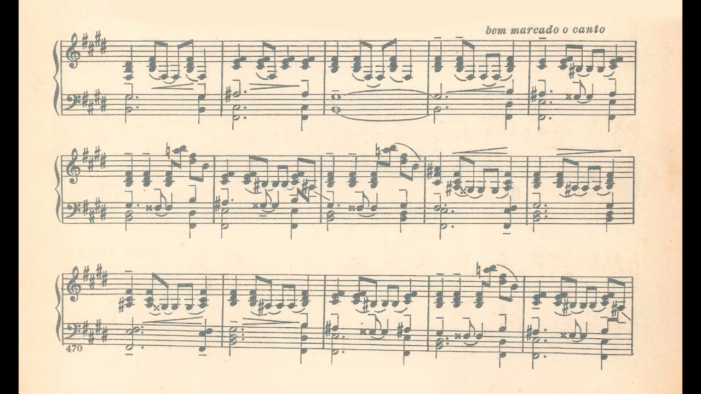
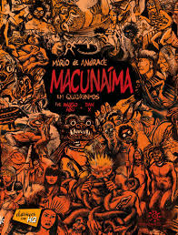
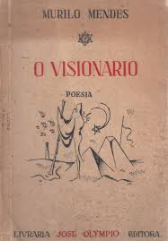

Loading...
Gerações
O período do modernismo pode ser dividido em três gerações

Heitor Villa-Lobos
Bachianas Brasileiras
1930/1945 (Segunda Geração)
É uma série de nove composições escritas por Heitor Villa-Lobos entre 1930 e 1945. Essas obras são consideradas algumas das mais importantes e representativas do compositor brasileiro, refletindo sua busca por uma síntese entre a música clássica europeia e a música popular brasileira.
Choros
1920/1929 (Primeira Geração)
É uma série de composições criadas por Heitor Villa-Lobos entre 1920 e 1929. Essa série é uma das mais importantes e inovadoras do compositor, refletindo sua profunda ligação com a música popular brasileira e sua capacidade de integrar diferentes estilos e influências. O termo "choros" refere-se a um gênero musical urbano brasileiro que surgiu no final do século XIX, caracterizado por sua melancolia e improvisação instrumental.

Gnattali
Concerto para Violão e Orquestra
1951 (Terceira Geração)
É uma obra significativa no repertório da música clássica brasileira, especialmente por sua integração de elementos da música popular com a música erudita. Composto em 1951, o concerto destaca-se por ser uma das primeiras grandes obras concertantes para violão e orquestra, um formato que até então era pouco explorado.

Guarnieri
Dança Brasileira
1928 (Primeira Geração)
É uma peça para piano solo composta por Camargo Guarnieri em 1928. É uma das obras mais conhecidas e populares do compositor, e destaca-se por sua vivacidade e pelo uso de ritmos e harmonias que evocam a música popular brasileira.
Música Viva
1938 (Segunda Geração)
Teve um impacto significativo na música erudita brasileira, introduzindo novos conceitos e técnicas que influenciaram gerações de compositores. Apesar de ter enfrentado resistência e críticas, especialmente durante os períodos de maior conservadorismo no Brasil, o movimento deixou um legado duradouro de inovação e criatividade.
Beba Coca-Cola
1966 (Terceira Geração)
"Beba Coca-Cola" é uma peça composta por Gilberto Mendes em 1966, sendo uma das obras mais conhecidas e icônicas do compositor. A obra é um exemplo do estilo eclético e experimental de Mendes, combinando música concreta, minimalismo e elementos da cultura popular.
Documentos
Alguns dos documentos do período:

Macunaíma (1928), de Mário de Andrade
As aventuras de Macunaíma, o anti-herói preguiçoso e sem caráter. Ele nasce negro no sertão, mas vira branco, vai para a cidade com os irmãos e se envolve com prostitutas, guerrilheiras e enfrenta todo tipo de gente em sua jornada.Primeira Geração
Manifesto antropófago (1928), de Oswald de Andrade
O Manifesto Antropófago defendia a criação da poesia brasileira de “exportação”, valorizando o uso da "língua literária", além de explicar a antropofagia, conceito que propunha "deglutir" a cultura europeia chegada ao Brasil e "digeri-la" sob a forma de uma arte essencialmente brasileira.Primeira Geração

O visionário (1941), de Murilo Mendes
Uma poesia surrealista, em que o poeta funde o imaginário e o cotidiano, o onírico e o intra-mundano, assim como o eterno e o contingenteSegunda Geração